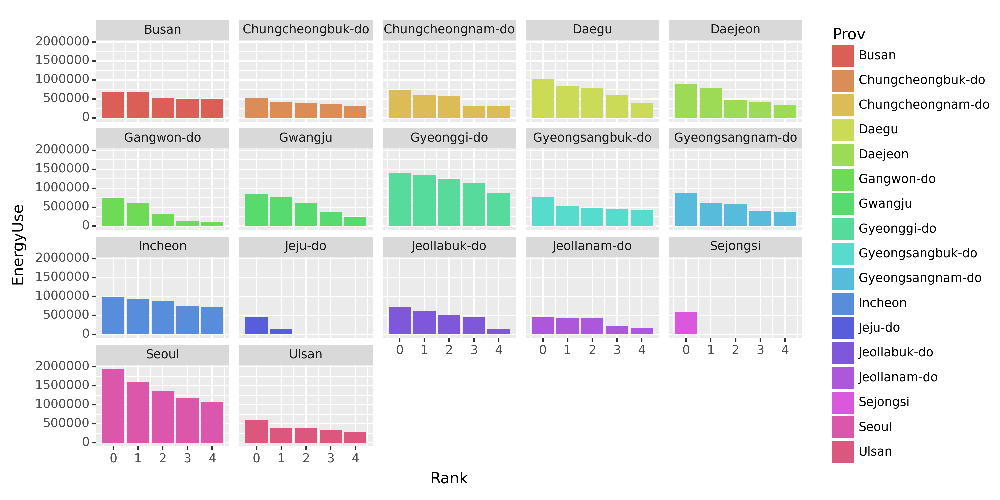
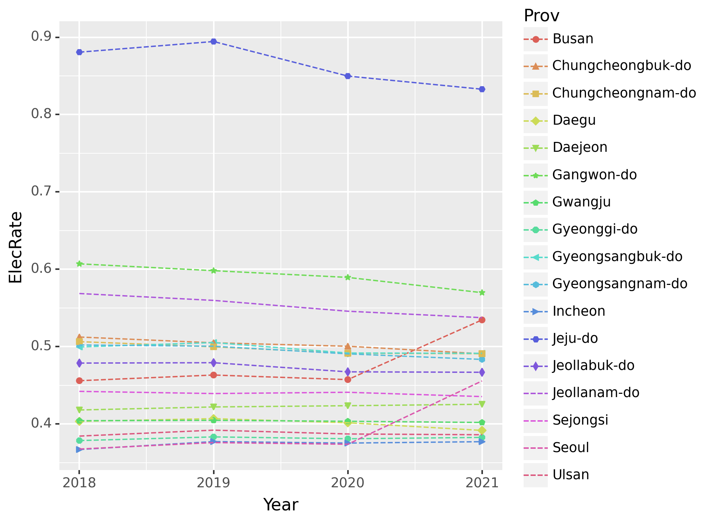

import pandas as pd
import numpy as np
from plotnine import *08wk-1: 에너지사용량 시각화
plotnine

1. 강의영상
2. Imports
3. 예비학습
A. pd.concat()
# 예시1 – 위아래로
df1 = pd.DataFrame({'A':[1,2,3],'B':[2,3,4]})
df2 = pd.DataFrame({'A':[-1,-2,-3],'B':[-2,-3,-4]})display("df1",df1)
display("df2",df2)'df1'| A | B | |
|---|---|---|
| 0 | 1 | 2 |
| 1 | 2 | 3 |
| 2 | 3 | 4 |
'df2'| A | B | |
|---|---|---|
| 0 | -1 | -2 |
| 1 | -2 | -3 |
| 2 | -3 | -4 |
#pd.concat([df1,df2],axis=0) # (3,2) concat (3,2) -> (6,4)
pd.concat([df1,df2])| A | B | |
|---|---|---|
| 0 | 1 | 2 |
| 1 | 2 | 3 |
| 2 | 3 | 4 |
| 0 | -1 | -2 |
| 1 | -2 | -3 |
| 2 | -3 | -4 |
인덱스를 재정리하고 싶다면?
pd.concat([df1,df2]).reset_index(drop=True)| A | B | |
|---|---|---|
| 0 | 1 | 2 |
| 1 | 2 | 3 |
| 2 | 3 | 4 |
| 3 | -1 | -2 |
| 4 | -2 | -3 |
| 5 | -3 | -4 |
#
# 예시2 – 좌우로
df1 = pd.DataFrame({'A':[1,2,3],'B':[2,3,4]})
df2 = pd.DataFrame({'C':[-1,-2,-3],'D':[-2,-3,-4]})display("df1",df1)
display("df2",df2)'df1'| A | B | |
|---|---|---|
| 0 | 1 | 2 |
| 1 | 2 | 3 |
| 2 | 3 | 4 |
'df2'| C | D | |
|---|---|---|
| 0 | -1 | -2 |
| 1 | -2 | -3 |
| 2 | -3 | -4 |
pd.concat([df1,df2],axis=1) # (3,2) concat (3,2) -> (3,4) | A | B | C | D | |
|---|---|---|---|---|
| 0 | 1 | 2 | -1 | -2 |
| 1 | 2 | 3 | -2 | -3 |
| 2 | 3 | 4 | -3 | -4 |
#
B. pd.merge()
big = pd.DataFrame({'department':['A','A','B','B'], 'gender':['male','female','male','female'],'count':[1,2,3,1]})
small = pd.DataFrame({'department':['A','B'], 'total':[3,4]})display("big",big)
display("small",small)'big'| department | gender | count | |
|---|---|---|---|
| 0 | A | male | 1 |
| 1 | A | female | 2 |
| 2 | B | male | 3 |
| 3 | B | female | 1 |
'small'| department | total | |
|---|---|---|
| 0 | A | 3 |
| 1 | B | 4 |
big.merge(small)| department | gender | count | total | |
|---|---|---|---|---|
| 0 | A | male | 1 | 3 |
| 1 | A | female | 2 | 3 |
| 2 | B | male | 3 | 4 |
| 3 | B | female | 1 | 4 |
small.merge(big)| department | total | gender | count | |
|---|---|---|---|---|
| 0 | A | 3 | male | 1 |
| 1 | A | 3 | female | 2 |
| 2 | B | 4 | male | 3 |
| 3 | B | 4 | female | 1 |
C. .applymap()
# 예시1
np.random.seed(43052)
df = pd.DataFrame({'A':np.random.rand(3), 'B':np.random.rand(3)})
df| A | B | |
|---|---|---|
| 0 | 0.817682 | 0.619777 |
| 1 | 0.049532 | 0.122541 |
| 2 | 0.838686 | 0.117128 |
df.applymap(lambda x: 'Yes' if x>0.5 else 'No')/tmp/ipykernel_288950/1665022133.py:1: FutureWarning: DataFrame.applymap has been deprecated. Use DataFrame.map instead.| A | B | |
|---|---|---|
| 0 | Yes | Yes |
| 1 | No | No |
| 2 | Yes | No |
#
D. df.astype()
- 예시1
df = pd.DataFrame({'A':[0,1,2],'B':[4,5,6]})
df| A | B | |
|---|---|---|
| 0 | 0 | 4 |
| 1 | 1 | 5 |
| 2 | 2 | 6 |
df.astype(float)| A | B | |
|---|---|---|
| 0 | 0.0 | 4.0 |
| 1 | 1.0 | 5.0 |
| 2 | 2.0 | 6.0 |
E. 제 아픈기억
# 예제1 – object형은 일괄적으로 문자형임을 의미하는게 아님
np.random.seed(43052)
df = pd.DataFrame({'A':['1','2','0','1',2], 'B':['2','3','0','0',0]})
df| A | B | |
|---|---|---|
| 0 | 1 | 2 |
| 1 | 2 | 3 |
| 2 | 0 | 0 |
| 3 | 1 | 0 |
| 4 | 2 | 0 |
df.info()<class 'pandas.core.frame.DataFrame'>
RangeIndex: 5 entries, 0 to 4
Data columns (total 2 columns):
# Column Non-Null Count Dtype
--- ------ -------------- -----
0 A 5 non-null object
1 B 5 non-null object
dtypes: object(2)
memory usage: 208.0+ bytesdf.A[0],df.A[4],df.B[0],df.B[4]('1', 2, '2', 0)#
# 예제2 – column이름이 이상하게 들어가 있는 경우가 있음.
df = pd.DataFrame({('A',''):[0,0,0], ('B',''):[1,1,1]})
df| A | B | |
|---|---|---|
| 0 | 0 | 1 |
| 1 | 0 | 1 |
| 2 | 0 | 1 |
df['A']0 0
1 0
2 0
Name: A, dtype: int64df[('A','')]0 0
1 0
2 0
Name: (A, ), dtype: int64#
4. 에너지사용량 시각화
아래는 2019년 서울의 에너지사용량을 불러오는 예시코드이다.
pd.read_csv('https://raw.githubusercontent.com/guebin/DV2022/main/posts/Energy/Seoul2019.csv')| 지역 | 건물동수 | 연면적 | 에너지사용량(TOE)/전기 | 에너지사용량(TOE)/도시가스 | 에너지사용량(TOE)/지역난방 | |
|---|---|---|---|---|---|---|
| 0 | 종로구 | 17,851 | 9,204,140 | 63,492 | 76,653 | 799 |
| 1 | 중구 | 10,383 | 10,078,848 | 79,223 | 68,210 | 497 |
| 2 | 용산구 | 17,138 | 10,756,612 | 51,229 | 79,805 | 11,128 |
| 3 | 성동구 | 13,980 | 11,804,313 | 59,832 | 99,986 | 0 |
| 4 | 광진구 | 21,556 | 12,272,738 | 68,756 | 123,447 | 0 |
| 5 | 동대문구 | 21,794 | 12,664,554 | 65,913 | 111,420 | 0 |
| 6 | 중랑구 | 23,950 | 15,182,802 | 59,370 | 109,284 | 7,442 |
| 7 | 성북구 | 27,112 | 15,938,807 | 77,007 | 148,376 | 0 |
| 8 | 강북구 | 23,334 | 9,458,987 | 47,731 | 100,045 | 0 |
| 9 | 도봉구 | 13,168 | 10,644,704 | 44,985 | 90,379 | 5,268 |
| 10 | 노원구 | 9,704 | 17,197,086 | 77,010 | 94,340 | 50,859 |
| 11 | 은평구 | 25,200 | 14,735,131 | 75,914 | 130,159 | 14,370 |
| 12 | 서대문구 | 17,651 | 12,559,425 | 65,164 | 111,542 | 6,330 |
| 13 | 마포구 | 18,844 | 15,024,186 | 92,453 | 114,931 | 20,148 |
| 14 | 양천구 | 14,690 | 15,428,339 | 70,721 | 82,857 | 49,258 |
| 15 | 강서구 | 20,446 | 20,641,866 | 86,809 | 128,786 | 35,896 |
| 16 | 구로구 | 17,204 | 13,509,894 | 59,916 | 120,457 | 2,963 |
| 17 | 금천구 | 12,135 | 7,420,441 | 34,791 | 69,814 | 732 |
| 18 | 영등포구 | 18,133 | 14,914,027 | 87,480 | 114,238 | 13,531 |
| 19 | 동작구 | 20,102 | 13,612,946 | 66,811 | 132,285 | 899 |
| 20 | 관악구 | 26,460 | 14,997,859 | 85,416 | 158,543 | 0 |
| 21 | 서초구 | 12,856 | 21,560,285 | 135,491 | 121,437 | 38,866 |
| 22 | 강남구 | 16,129 | 29,961,585 | 180,121 | 149,045 | 83,459 |
| 23 | 송파구 | 19,331 | 26,573,343 | 139,117 | 143,601 | 71,954 |
| 24 | 강동구 | 16,636 | 15,048,315 | 70,341 | 121,931 | 11,921 |
에너지 사용량은 2018년부터 2021년까지의 기간 동안 서울, 부산 등 여러 지역에 대해 정리되어 있으며, 아래 주소 형식으로 저장되어 있다.
https://raw.githubusercontent.com/guebin/DV2022/main/posts/Energy/Seoul2018.csv
https://raw.githubusercontent.com/guebin/DV2022/main/posts/Energy/Seoul2019.csv
https://raw.githubusercontent.com/guebin/DV2022/main/posts/Energy/Seoul2020.csv
https://raw.githubusercontent.com/guebin/DV2022/main/posts/Energy/Seoul2021.csv
...
https://raw.githubusercontent.com/guebin/DV2022/main/posts/Energy/Busan2018.csv
https://raw.githubusercontent.com/guebin/DV2022/main/posts/Energy/Busan2019.csv
https://raw.githubusercontent.com/guebin/DV2022/main/posts/Energy/Busan2020.csv
https://raw.githubusercontent.com/guebin/DV2022/main/posts/Energy/Busan2021.csv아래의 url, prov를 참고하여 모든 자료를 불러온 뒤 pd.concat()을 이용하여 하나의 df로 합쳐라.
url = 'https://raw.githubusercontent.com/guebin/DV2022/main/posts/Energy/{}.csv'
prov = ['Seoul', 'Busan', 'Daegu', 'Incheon',
'Gwangju', 'Daejeon', 'Ulsan', 'Sejongsi',
'Gyeonggi-do', 'Gangwon-do', 'Chungcheongbuk-do',
'Chungcheongnam-do', 'Jeollabuk-do', 'Jeollanam-do',
'Gyeongsangbuk-do', 'Gyeongsangnam-do', 'Jeju-do']올바르게 정리된 데이터프레임의 예시는 아래와 같다.
(풀이)
df = pd.concat([pd.read_csv(url.format(p+y)).assign(년도=y, 시도=p) for p in prov for y in ['2018', '2019', '2020', '2021']]).reset_index(drop=True)
df| 지역 | 건물동수 | 연면적 | 에너지사용량(TOE)/전기 | 에너지사용량(TOE)/도시가스 | 에너지사용량(TOE)/지역난방 | 년도 | 시도 | |
|---|---|---|---|---|---|---|---|---|
| 0 | 종로구 | 17,929 | 9,141,777 | 64,818 | 82,015 | 111 | 2018 | Seoul |
| 1 | 중구 | 10,598 | 10,056,233 | 81,672 | 75,260 | 563 | 2018 | Seoul |
| 2 | 용산구 | 17,201 | 10,639,652 | 52,659 | 85,220 | 12,043 | 2018 | Seoul |
| 3 | 성동구 | 14,180 | 11,631,770 | 60,559 | 107,416 | 0 | 2018 | Seoul |
| 4 | 광진구 | 21,520 | 12,054,796 | 70,609 | 130,308 | 0 | 2018 | Seoul |
| ... | ... | ... | ... | ... | ... | ... | ... | ... |
| 995 | 서귀포시 | 34,729 | 7,233,931 | 34,641 | 1,306 | 0 | 2019 | Jeju-do |
| 996 | 제주시 | 66,504 | 19,819,923 | 99,212 | 22,179 | 0 | 2020 | Jeju-do |
| 997 | 서귀포시 | 34,880 | 7,330,040 | 35,510 | 1,639 | 0 | 2020 | Jeju-do |
| 998 | 제주시 | 67,053 | 20,275,738 | 103,217 | 25,689 | 0 | 2021 | Jeju-do |
| 999 | 서귀포시 | 35,230 | 7,512,206 | 37,884 | 2,641 | 0 | 2021 | Jeju-do |
1000 rows × 8 columns
(2) 의미상 숫자형이지만 문자형으로 입력이된 자료를 모두 전처리하라.
(풀이)
df.assign(년도 = df.년도.astype(int))\
.set_index(['년도','시도','지역']).applymap(lambda x: str(x).replace(',','')).astype(int).reset_index()/tmp/ipykernel_288950/1450993263.py:2: FutureWarning: DataFrame.applymap has been deprecated. Use DataFrame.map instead.| 년도 | 시도 | 지역 | 건물동수 | 연면적 | 에너지사용량(TOE)/전기 | 에너지사용량(TOE)/도시가스 | 에너지사용량(TOE)/지역난방 | |
|---|---|---|---|---|---|---|---|---|
| 0 | 2018 | Seoul | 종로구 | 17929 | 9141777 | 64818 | 82015 | 111 |
| 1 | 2018 | Seoul | 중구 | 10598 | 10056233 | 81672 | 75260 | 563 |
| 2 | 2018 | Seoul | 용산구 | 17201 | 10639652 | 52659 | 85220 | 12043 |
| 3 | 2018 | Seoul | 성동구 | 14180 | 11631770 | 60559 | 107416 | 0 |
| 4 | 2018 | Seoul | 광진구 | 21520 | 12054796 | 70609 | 130308 | 0 |
| ... | ... | ... | ... | ... | ... | ... | ... | ... |
| 995 | 2019 | Jeju-do | 서귀포시 | 34729 | 7233931 | 34641 | 1306 | 0 |
| 996 | 2020 | Jeju-do | 제주시 | 66504 | 19819923 | 99212 | 22179 | 0 |
| 997 | 2020 | Jeju-do | 서귀포시 | 34880 | 7330040 | 35510 | 1639 | 0 |
| 998 | 2021 | Jeju-do | 제주시 | 67053 | 20275738 | 103217 | 25689 | 0 |
| 999 | 2021 | Jeju-do | 서귀포시 | 35230 | 7512206 | 37884 | 2641 | 0 |
1000 rows × 8 columns
(3) 열의 이름을 아래와 같이 바꾸라.
name_dict = {
'년도': 'Year',
'시도': 'Prov',
'지역': 'Reg',
'건물동수': 'BldgCount',
'연면적': 'Area',
'에너지사용량(TOE)/전기': 'Elec',
'에너지사용량(TOE)/도시가스': 'Gas',
'에너지사용량(TOE)/지역난방': 'Heat'
}(풀이)
df.assign(년도 = df.년도.astype(int))\
.set_index(['년도','시도','지역']).applymap(lambda x: str(x).replace(',','')).astype(int).reset_index()\
.rename(name_dict,axis=1)/tmp/ipykernel_288950/4155741766.py:2: FutureWarning: DataFrame.applymap has been deprecated. Use DataFrame.map instead.| Year | Prov | Reg | BldgCount | Area | Elec | Gas | Heat | |
|---|---|---|---|---|---|---|---|---|
| 0 | 2018 | Seoul | 종로구 | 17929 | 9141777 | 64818 | 82015 | 111 |
| 1 | 2018 | Seoul | 중구 | 10598 | 10056233 | 81672 | 75260 | 563 |
| 2 | 2018 | Seoul | 용산구 | 17201 | 10639652 | 52659 | 85220 | 12043 |
| 3 | 2018 | Seoul | 성동구 | 14180 | 11631770 | 60559 | 107416 | 0 |
| 4 | 2018 | Seoul | 광진구 | 21520 | 12054796 | 70609 | 130308 | 0 |
| ... | ... | ... | ... | ... | ... | ... | ... | ... |
| 995 | 2019 | Jeju-do | 서귀포시 | 34729 | 7233931 | 34641 | 1306 | 0 |
| 996 | 2020 | Jeju-do | 제주시 | 66504 | 19819923 | 99212 | 22179 | 0 |
| 997 | 2020 | Jeju-do | 서귀포시 | 34880 | 7330040 | 35510 | 1639 | 0 |
| 998 | 2021 | Jeju-do | 제주시 | 67053 | 20275738 | 103217 | 25689 | 0 |
| 999 | 2021 | Jeju-do | 서귀포시 | 35230 | 7512206 | 37884 | 2641 | 0 |
1000 rows × 8 columns
(4) 아래와 같은 그림을 시각화 하라.
# 시각화예시
(풀이)
tidydata = df.assign(년도 = df.년도.astype(int))\
.set_index(['년도','시도','지역']).applymap(lambda x: str(x).replace(',','')).astype(int).reset_index()\
.rename(name_dict,axis=1)\
.set_index(['Year','Prov','Reg','BldgCount','Area']).stack().reset_index().rename({'level_5':'Type',0:'EnergyUse'},axis=1)\
.pivot_table(index=['Prov','Year'],columns='Type',values='EnergyUse',aggfunc='sum').stack().reset_index().rename({0:'EnergyUse'},axis=1)\
.eval('logEnergyUse=log(EnergyUse)')
#---#
tidydata
fig = ggplot(tidydata)+geom_line(aes(x='Year',y='logEnergyUse',color='Type',linetype='Type'))+facet_wrap('Prov',scales='free')
fig/tmp/ipykernel_288950/2550293754.py:2: FutureWarning: DataFrame.applymap has been deprecated. Use DataFrame.map instead.
/home/cgb2/anaconda3/envs/ag/lib/python3.10/site-packages/pandas/core/arraylike.py:396: RuntimeWarning: divide by zero encountered in log<Figure Size: (640 x 480)>- 그림이 짜증나게 보임
fig = fig.draw()
fig.set_size_inches(10,6)
fig.set_dpi(150)
fig(5) Prov별로 총 에너지사용량이 많은 상위5개의 Reg을 찾고 아래와 같이 시각화 하라.
# 시각화예시
(풀이)
g = df.assign(년도 = df.년도.astype(int))\
.set_index(['년도','시도','지역']).applymap(lambda x: str(x).replace(',','')).astype(int).reset_index()\
.rename(name_dict,axis=1)\
.drop(['BldgCount','Area'],axis=1)\
.set_index(['Year','Prov','Reg']).sum(axis=1).reset_index().rename({0:'EnergyUse'},axis=1)\
.pivot_table(index=['Prov','Reg'],columns='Year').sum(axis=1).reset_index().rename({0:'EnergyUse'},axis=1)\
.groupby('Prov')/tmp/ipykernel_288950/2120937695.py:2: FutureWarning: DataFrame.applymap has been deprecated. Use DataFrame.map instead.tidydata = pd.concat([df.sort_values('EnergyUse',ascending=False).iloc[:5].reset_index(drop=True).reset_index().rename({'index':'Rank'},axis=1) for k,df in g])
tidydata | Rank | Prov | Reg | EnergyUse | |
|---|---|---|---|---|
| 0 | 0 | Busan | 부산진구 | 690344.0 |
| 1 | 1 | Busan | 해운대구 | 689901.0 |
| 2 | 2 | Busan | 사하구 | 522150.0 |
| 3 | 3 | Busan | 북구 | 493913.0 |
| 4 | 4 | Busan | 남구 | 491030.0 |
| ... | ... | ... | ... | ... |
| 0 | 0 | Ulsan | 남구 | 607820.0 |
| 1 | 1 | Ulsan | 중구 | 395158.0 |
| 2 | 2 | Ulsan | 울주군 | 394217.0 |
| 3 | 3 | Ulsan | 북구 | 334844.0 |
| 4 | 4 | Ulsan | 동구 | 281094.0 |
78 rows × 4 columns
fig = ggplot(tidydata) + geom_col(aes(x='Rank',y='EnergyUse',fill='Prov'))+facet_wrap('Prov')
fig = fig.draw()
fig.set_size_inches(12,6)
fig.set_dpi(150)
fig
(5) (Prov,Year)별 전기에너지 사용량 비율을 구하고 아래와 같이 시각화 하라. + 제주를 제외한 지역으로 한정하고 시각화하라.
# 시각화예시
(풀이)
df.assign(년도 = df.년도.astype(int))\
.set_index(['년도','시도','지역']).applymap(lambda x: str(x).replace(',','')).astype(int).reset_index()\
.rename(name_dict,axis=1)\
.drop(['BldgCount','Area'],axis=1)\
.melt(id_vars=['Year','Prov','Reg']).rename({'variable':'Type','value':'EnergyUse'},axis=1)\
.pivot_table(index=['Year','Prov','Type'],values='EnergyUse',aggfunc='sum').reset_index()\
.set_index(['Year','Prov','Type']).unstack()\
.assign(ElecRate = lambda df: df[('EnergyUse','Elec')]/(df[('EnergyUse','Elec')]+df[('EnergyUse','Gas')]+df[('EnergyUse','Heat')]))\
.iloc[:,-1].reset_index().set_axis(['Year','Prov','ElecRate'],axis=1)/tmp/ipykernel_288950/2924150206.py:2: FutureWarning: DataFrame.applymap has been deprecated. Use DataFrame.map instead.| Year | Prov | ElecRate | |
|---|---|---|---|
| 0 | 2018 | Busan | 0.455996 |
| 1 | 2018 | Chungcheongbuk-do | 0.512447 |
| 2 | 2018 | Chungcheongnam-do | 0.506471 |
| 3 | 2018 | Daegu | 0.403464 |
| 4 | 2018 | Daejeon | 0.418136 |
| ... | ... | ... | ... |
| 63 | 2021 | Jeollabuk-do | 0.466878 |
| 64 | 2021 | Jeollanam-do | 0.537464 |
| 65 | 2021 | Sejongsi | 0.435457 |
| 66 | 2021 | Seoul | 0.455675 |
| 67 | 2021 | Ulsan | 0.386115 |
68 rows × 3 columns
tidydata = df.assign(년도 = df.년도.astype(int))\
.set_index(['년도','시도','지역']).applymap(lambda x: str(x).replace(',','')).astype(int).reset_index()\
.rename(name_dict,axis=1)\
.drop(['BldgCount','Area'],axis=1)\
.melt(id_vars=['Year','Prov','Reg']).rename({'variable':'Type','value':'EnergyUse'},axis=1)\
.pivot_table(index=['Year','Prov','Type'],values='EnergyUse',aggfunc='sum').reset_index()\
.set_index(['Year','Prov','Type']).unstack()\
.assign(ElecRate = lambda df: df[('EnergyUse','Elec')]/(df[('EnergyUse','Elec')]+df[('EnergyUse','Gas')]+df[('EnergyUse','Heat')]))\
.iloc[:,-1].reset_index().set_axis(['Year','Prov','ElecRate'],axis=1)/tmp/ipykernel_288950/3275607378.py:2: FutureWarning: DataFrame.applymap has been deprecated. Use DataFrame.map instead.tidydata| Year | Prov | ElecRate | |
|---|---|---|---|
| 0 | 2018 | Busan | 0.455996 |
| 1 | 2018 | Chungcheongbuk-do | 0.512447 |
| 2 | 2018 | Chungcheongnam-do | 0.506471 |
| 3 | 2018 | Daegu | 0.403464 |
| 4 | 2018 | Daejeon | 0.418136 |
| ... | ... | ... | ... |
| 63 | 2021 | Jeollabuk-do | 0.466878 |
| 64 | 2021 | Jeollanam-do | 0.537464 |
| 65 | 2021 | Sejongsi | 0.435457 |
| 66 | 2021 | Seoul | 0.455675 |
| 67 | 2021 | Ulsan | 0.386115 |
68 rows × 3 columns
fig = ggplot(tidydata)
point = geom_point(aes(x='Year',y='ElecRate',color='Prov',shape='Prov'))
line = geom_line(aes(x='Year',y='ElecRate',color='Prov'),linetype='dashed')
fig = (fig + point + line).draw()
fig.set_dpi(150)
fig.set_size_inches(7,5)
fig/home/cgb2/anaconda3/envs/ag/lib/python3.10/site-packages/mizani/palettes.py:706: UserWarning: Palette can return a maximum of 13 values. 17 values requested.
/home/cgb2/anaconda3/envs/ag/lib/python3.10/site-packages/plotnine/layer.py:364: PlotnineWarning: geom_point : Removed 16 rows containing missing values.
/home/cgb2/anaconda3/envs/ag/lib/python3.10/site-packages/mizani/palettes.py:706: UserWarning: Palette can return a maximum of 13 values. 17 values requested.
/home/cgb2/anaconda3/envs/ag/lib/python3.10/site-packages/plotnine/guides/guides.py:259: PlotnineWarning: geom_point legend : Removed 4 rows containing missing values.
fig = ggplot(tidydata.query('Prov != "Jeju-do"'))
point = geom_point(aes(x='Year',y='ElecRate',color='Prov',shape='Prov'))
line = geom_line(aes(x='Year',y='ElecRate',color='Prov'),linetype='dashed')
fig = (fig + point + line).draw()
fig.set_dpi(150)
fig.set_size_inches(7,5)
fig/home/cgb2/anaconda3/envs/ag/lib/python3.10/site-packages/mizani/palettes.py:706: UserWarning: Palette can return a maximum of 13 values. 16 values requested.
/home/cgb2/anaconda3/envs/ag/lib/python3.10/site-packages/plotnine/layer.py:364: PlotnineWarning: geom_point : Removed 12 rows containing missing values.
/home/cgb2/anaconda3/envs/ag/lib/python3.10/site-packages/mizani/palettes.py:706: UserWarning: Palette can return a maximum of 13 values. 16 values requested.
/home/cgb2/anaconda3/envs/ag/lib/python3.10/site-packages/plotnine/guides/guides.py:259: PlotnineWarning: geom_point legend : Removed 3 rows containing missing values.5. pd.merge() 의 이용
before에서 after로 가는 일반적인 방법이 있을까?
before = df.assign(년도 = df.년도.astype(int))\
.set_index(['년도','시도','지역']).applymap(lambda x: str(x).replace(',','')).astype(int).reset_index()\
.rename(name_dict,axis=1)\
.drop(['BldgCount','Area'],axis=1)
after = before\
.melt(id_vars=['Year','Prov','Reg']).rename({'variable':'Type','value':'EnergyUse'},axis=1)\
.pivot_table(index=['Year','Prov','Type'],values='EnergyUse',aggfunc='sum').reset_index()\
.set_index(['Year','Prov','Type']).unstack()\
.assign(ElecRate = lambda df: df[('EnergyUse','Elec')]/(df[('EnergyUse','Elec')]+df[('EnergyUse','Gas')]+df[('EnergyUse','Heat')]))\
.iloc[:,-1].reset_index().set_axis(['Year','Prov','ElecRate'],axis=1)
display('before',before)
display('after',after)/tmp/ipykernel_288950/2643872.py:2: FutureWarning: DataFrame.applymap has been deprecated. Use DataFrame.map instead.'before'| Year | Prov | Reg | Elec | Gas | Heat | |
|---|---|---|---|---|---|---|
| 0 | 2018 | Seoul | 종로구 | 64818 | 82015 | 111 |
| 1 | 2018 | Seoul | 중구 | 81672 | 75260 | 563 |
| 2 | 2018 | Seoul | 용산구 | 52659 | 85220 | 12043 |
| 3 | 2018 | Seoul | 성동구 | 60559 | 107416 | 0 |
| 4 | 2018 | Seoul | 광진구 | 70609 | 130308 | 0 |
| ... | ... | ... | ... | ... | ... | ... |
| 995 | 2019 | Jeju-do | 서귀포시 | 34641 | 1306 | 0 |
| 996 | 2020 | Jeju-do | 제주시 | 99212 | 22179 | 0 |
| 997 | 2020 | Jeju-do | 서귀포시 | 35510 | 1639 | 0 |
| 998 | 2021 | Jeju-do | 제주시 | 103217 | 25689 | 0 |
| 999 | 2021 | Jeju-do | 서귀포시 | 37884 | 2641 | 0 |
1000 rows × 6 columns
'after'| Year | Prov | ElecRate | |
|---|---|---|---|
| 0 | 2018 | Busan | 0.455996 |
| 1 | 2018 | Chungcheongbuk-do | 0.512447 |
| 2 | 2018 | Chungcheongnam-do | 0.506471 |
| 3 | 2018 | Daegu | 0.403464 |
| 4 | 2018 | Daejeon | 0.418136 |
| ... | ... | ... | ... |
| 63 | 2021 | Jeollabuk-do | 0.466878 |
| 64 | 2021 | Jeollanam-do | 0.537464 |
| 65 | 2021 | Sejongsi | 0.435457 |
| 66 | 2021 | Seoul | 0.455675 |
| 67 | 2021 | Ulsan | 0.386115 |
68 rows × 3 columns
big = before\
.melt(id_vars=['Year','Prov','Reg']).rename({'variable':'Type','value':'EnergyUse'},axis=1)\
.pivot_table(index=['Year','Prov','Type'],values='EnergyUse',aggfunc='sum').reset_index()
small = big.pivot_table(index=['Year','Prov'],values='EnergyUse',aggfunc='sum').reset_index().rename({'EnergyUse':'EnergyUse_TypeSum'},axis=1)big.merge(small).query('Type=="Elec"')\
.eval('ElecRate = EnergyUse/EnergyUse_TypeSum')\
.loc[:,['Year','Prov','ElecRate']].reset_index(drop=True)| Year | Prov | ElecRate | |
|---|---|---|---|
| 0 | 2018 | Busan | 0.455996 |
| 1 | 2018 | Chungcheongbuk-do | 0.512447 |
| 2 | 2018 | Chungcheongnam-do | 0.506471 |
| 3 | 2018 | Daegu | 0.403464 |
| 4 | 2018 | Daejeon | 0.418136 |
| ... | ... | ... | ... |
| 63 | 2021 | Jeollabuk-do | 0.466878 |
| 64 | 2021 | Jeollanam-do | 0.537464 |
| 65 | 2021 | Sejongsi | 0.435457 |
| 66 | 2021 | Seoul | 0.455675 |
| 67 | 2021 | Ulsan | 0.386115 |
68 rows × 3 columns